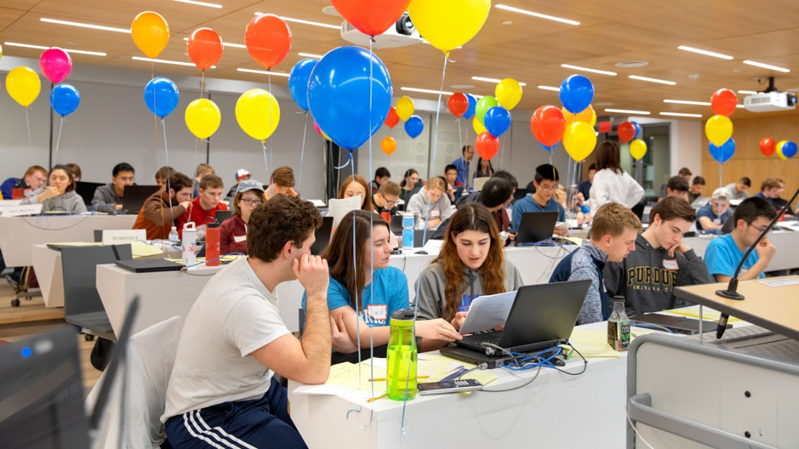
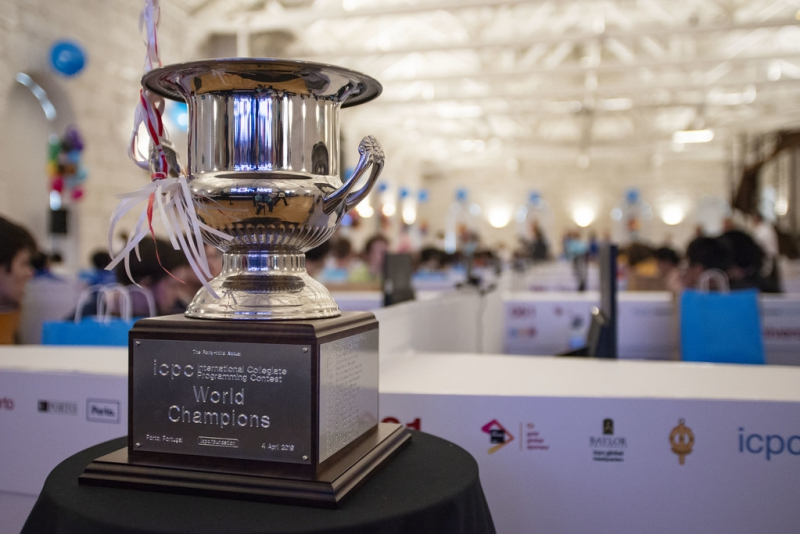
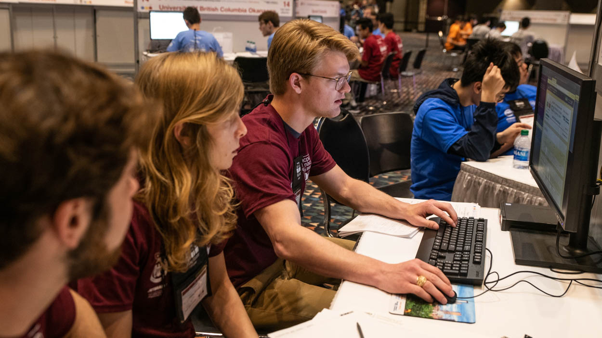

КЕЙС № 1
Цифровая платформа Федерации спортивного программирования Республики Дагестан
Республиканский фестиваль по спортивному программированию «ТехноСпортФест – 2026».
Задача
Федерация спортивного программирования Республики Дагестан проводит соревнования, формирует сборные, ведёт работу со спортсменами, публикует результаты и взаимодействует с образовательными организациями.
Сейчас сведения о спортсменах, соревнованиях, результатах и достижениях могут находиться в разных источниках: таблицах, документах, социальных сетях и внешних соревновательных системах.
Командам предлагается разработать MVP единой цифровой платформы Федерации спортивного программирования Республики Дагестан.
Платформа должна объединить спортсменов и соревнования в одной системе и позволить в дальнейшем развивать её как основной цифровой сервис Федерации.
От команды не требуется создавать полностью готовый промышленный продукт. Главная задача первого этапа — создать понятную и работоспособную основу системы, которую можно будет расширять.
МОДУЛИ ПЛАТФОРМЫ
Платформа должна объединить спортсменов, соревнования, результаты и рейтинги в одной системе. Основное внимание рекомендуется уделить спортсменам, соревнованиям, результатам и рейтингу.
1 Спортсмен и его профиль
На платформе должна быть предусмотрена регистрация и авторизация пользователя. Для спортсмена необходимо создать личный кабинет.
Профиль должен позволять хранить как минимум:
- ФИО;
- образовательную организацию;
- населённый пункт;
- спортивную дисциплину или дисциплины;
- спортивный разряд или спортивное звание при наличии;
- историю участия в соревнованиях;
- занятые места и результаты;
- рейтинг спортсмена.
Для разработки можно использовать тестовые данные. Реальные персональные данные третьих лиц использовать не требуется.
2 Соревнования
На платформе необходимо создать раздел соревнований. Пользователь должен иметь возможность открыть карточку соревнования и получить основную информацию:
- название;
- уровень соревнования;
- дисциплину;
- дату;
- формат проведения;
- место проведения при необходимости;
- описание;
- статус;
- сроки регистрации;
- результаты после завершения соревнования.
Рекомендуется разделить соревнования на: предстоящие / текущие / завершённые.
Спортсмен должен иметь возможность зарегистрироваться на выбранное соревнование. После регистрации соревнование должно появляться в его личном кабинете, а организатор должен видеть спортсмена в списке участников.
3 Результаты
Организатор должен иметь возможность внести результат завершённого соревнования.
Результат должен быть связан с конкретными: спортсменом → соревнованием → дисциплиной → занятым местом или результатом.
После публикации информация должна отображаться:
- в карточке соревнования;
- в профиле спортсмена;
- в рейтинговой системе.
4 Рейтинг спортсменов Республики Дагестан
Один из ключевых модулей платформы — рейтинг спортсменов.
Задача рейтинга — отражать спортивные результаты и уровень спортсмена на основании его выступлений на соревнованиях и спортивной квалификации.
Команда должна самостоятельно разработать и обосновать систему начисления рейтинговых баллов. При построении модели необходимо предусмотреть минимум два фактора.
Результаты соревнований
При начислении баллов должно учитываться, на соревновании какого уровня показан результат. Например:
- чемпионат или Кубок России;
- другие всероссийские соревнования;
- межрегиональные соревнования;
- чемпионат или Кубок Республики Дагестан;
- другие региональные соревнования.
Также могут учитываться:
- занятое место;
- количество участников;
- дисциплина;
- несколько лучших результатов спортсмена;
- давность результата.
Команда самостоятельно определяет веса и конкретную математическую модель.
Спортивная квалификация
Рейтинг также должен учитывать наличие у спортсмена спортивного разряда или спортивного звания. Например:
- спортивные разряды;
- I спортивный разряд;
- кандидат в мастера спорта;
- мастер спорта и другие предусмотренные спортивной классификацией уровни.
Чем выше спортивная квалификация, тем больший вклад она может вносить в рейтинг.
Важно
- Разрабатываемый рейтинг является внутренним рейтингом Федерации спортивного программирования Республики Дагестан.
- Он не заменяет официальные спортивные разряды, нормативы ЕВСК или решения спортивных органов.
- От команды не требуется воспроизводить официальную систему присвоения разрядов.
- Необходимо предложить понятный и логичный способ сравнения спортивных результатов.
- Пользователь должен иметь возможность понять, из чего сформирован его рейтинг.
5 Функционал организатора
Для представителя Федерации необходимо предусмотреть административную часть.
В базовой версии организатор должен иметь возможность:
- создать и отредактировать соревнование;
- посмотреть зарегистрированных участников;
- внести результаты;
- изменить сведения о соревновании;
- управлять необходимыми для работы платформы справочными данными.
Не требуется разрабатывать сложную универсальную CMS. Достаточно рабочего интерфейса, через который можно продемонстрировать основные операции.
6 Информационная часть
Платформа в дальнейшем должна стать центральным информационным ресурсом Федерации. Поэтому в структуре проекта желательно предусмотреть:
- новости;
- календарь;
- документы Федерации;
- положения и регламенты;
- правила вида спорта;
- полезные материалы.
На первом этапе полноценная CMS для этих разделов не является обязательной. Допускается реализовать их как простые разделы с демонстрационным содержимым.
Основное внимание рекомендуется уделить спортсменам, соревнованиям, результатам и рейтингу.
Основной сценарий
К моменту финала желательно, чтобы через платформу можно было пройти следующий путь:
спортсмен регистрируется → открывает соревнование → подаёт заявку → организатор видит участника → после соревнования вносит результат → результат появляется в профиле спортсмена → рейтинг пересчитывается.
Это основной пользовательский сценарий первого кейса.
Техническая часть
Технологический стек команда выбирает самостоятельно. Можно использовать любые языки программирования, фреймворки, базы данных и инфраструктурные решения. Решение должно:
- запускаться;
- сохранять основные данные;
- иметь рабочую логику, а не только дизайн-макеты;
- позволять войти минимум под ролью спортсмена и организатора;
- иметь понятную структуру проекта.
При проектировании архитектуры необходимо учитывать, что функциональность платформы в дальнейшем может расширяться. Платформа должна допускать добавление новых возможностей без полной переработки существующей системы.
Что не требуется
В первом кейсе не требуется:
- создавать собственный компилятор;
- реализовывать автоматическую проверку программного кода;
- обеспечивать промышленную высоконагруженную инфраструктуру;
- создавать отдельные приложения для iOS и Android;
- использовать платные сервисы;
- интегрироваться с государственными информационными системами;
- реализовывать юридически значимую идентификацию;
- заполнять платформу большим количеством реальных данных.
Дополнительные возможности
Если базовая часть готова, команда может реализовать дополнительные функции:
- профили команд;
- тренеров и наставников;
- судей;
- спортивные разряды и историю их изменения;
- историю рейтинга;
- фильтры и поиск;
- статистику Федерации;
- аналитику;
- уведомления;
- календарь;
- экспорт данных;
- публичные профили спортсменов;
- интеграции с внешними платформами;
- API;
- другие полезные функции.
Количество дополнительных функций само по себе не является целью. Работающий основной сценарий важнее набора незавершённых возможностей.
Использование готовых технологий и ИИ
Допускается использование:
- открытых библиотек;
- фреймворков;
- UI-компонентов;
- open-source решений;
- API;
- шаблонов;
- инструментов искусственного интеллекта;
- ассистентов программирования.
Команда должна понимать своё решение и быть способна на финальной защите объяснить его архитектуру и работу. Готовый сторонний продукт нельзя выдавать за собственную разработку.
Порядок первого этапа
22 сентября — участникам направляется окончательный кейс и организационная информация.
23 сентября — начинается дистанционный этап. После старта команды работают над решением в удобном для себя режиме и могут продолжать разработку вплоть до начала финала 26 сентября.
Первый этап не является отсевочным. Промежуточная сдача, защита и выставление баллов не проводятся. Все зарегистрированные команды допускаются к финалу независимо от степени готовности решения первого кейса. Степень его выполнения будет оцениваться только вместе с итоговым продуктом после выполнения финального задания.
Финал
26 сентября 2026 года команды встречаются в Технопарке ДГТУ.
На площадке будет выдано дополнительное условие — Кейс № 2. Его содержание заранее не раскрывается. После получения дополнительного задания команды продолжают работу над тем же продуктом.
Федерация спортивного программирования это:



Контакты
По вопросам участия в фестивале и сотрудничества обращайтесь:
Fsprd@mail.ru
Республика Дагестан, Махачкала
2026 год